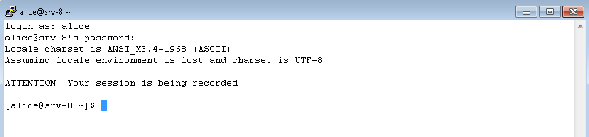
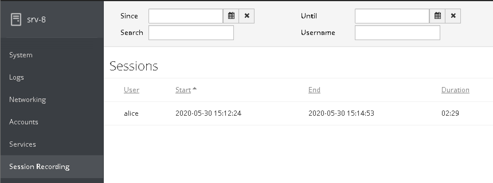
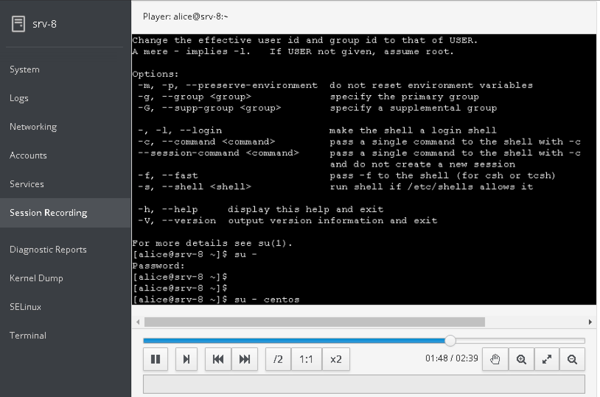

Native Session Recording 是 RHEL 8 / CentOS 8 引入的新功能, 可以方便的录制用户会话用以审计. 根据官方文档, 在 RHEL 8 或者 CentOS 8 上配置非常容易. 由于目前我的大部分服务器还是跑在 CentOS 7 上, 很自然的想能否将这套方案在 CentOS 7 上部署出来. 原本以为很容易, 实际做下来才发现坑不少. 这里做一个简要的记录
tlog 会话记录的组件和原理
之前也有不少开源工具可以提供 ssh 会话录制的功能, 比如 script + scriptreplay. 不过也就是玩具的水平, 要真正生产可用还需要大量的 DIY 脚本来辅助. 而 tlog 算是一个相对比较成熟的开源方案了: 使用简便, 搭配 cockpit 可以方便的管理会话记录, 针对重放也提供了丰富的控制.
基本原理
核心组件是 tlog + sssd
- 用户通过 pam 机制登入
- sssd-session-recording 会将 nss response 中的用户 shell 替换为 tlog-rec-session
- 启动 tlog-rec-session
- tlog-rec-session 通过配置文件获取用户的原始 shell
- tlog-rec-session 启动用户的原始 shell
- tlog-rec-session 位于 user terminal 和 user shell 中间, 记录所有通过的数据, 发送给 journal
Web UI
cockpit-session-recording 提供一个 web 界面来管理记录的会话, 并提供一个简易的回放播放器.
针对记录会话功能, Web UI 并不是必须的组件. 然而直接通过命令行 journalctl -o verbose | grep -i '"rec"' 来过滤感兴趣会话, 体验并不是很友好
编译 rpm 包
CentOS 7 的源默认不要带 tlog, 可以使用 tar ball 源码编译为 rpm. Cockpit 软件包有一部分, 但是不包含 cockpit-session-recording 组件, 因此也需要单独编译 rpm
当前 tlog 最新版本为 v8-2, cockpit-session-recording 最新版本为 v4
tlog
1 | wget -c https://github.com/Scribery/tlog/releases/download/v8-2/tlog-8.tar.gz |
cockpit-session-recording
1 | wget -c https://github.com/Scribery/cockpit-session-recording/releases/download/4/cockpit-session-recording-4.tar.gz |
方案部署
配置持久化 journal
默认 tlog 将记录的会话保存在 journal 中 (也支持发送给 Elasticsearch). 如果不存在 /var/log/journal 目录, 则 journal 将保存在 /run/log/journal 下, 为非持久存储, 重启丢失. 因此首先需要将 journal 保存到持久存储:
1 | mkdir -p /var/log/journal /etc/systemd/journald.conf.d |
安装 tlog 和 cockpit-session-recording
直接安装前面编译出来的 rpm 即可 1
2
3
4yum install -y cockpit
yum localinstall -y tlog-8-2.el7.x86_64.rpm cockpit-session-recording-4-1.el7.noarch.rpm
systemctl enable --now cockpit.socket
配置 sssd
CentOS 7 使用 1.16.x 的 sssd, 而 RHEL 8/CentOS 8 使用 2.2.x 版本. 部分行为有所差别.
2.2.x 版本的 sssd 使了 --enable-files-domain 编译参数, 允许在没有 /etc/sssd/sssd.conf 时启动, 而 1.16.x 使用了 --disable-files-domain, 要求 /etc/sssd/sssd.conf 必须存在.
1 | yum install sssd-common sssd-client -y |
修正 nsswitch
CentOS 8 / RHEL 8 的 /etc/nsswitch.conf 相对 CentOS 7 / RHEL 7 发生了细微的变化: 对 passwd 和 group, sss 排到了 files 前面 1
2
3
4...
passwd: sss files
group: sss files
...
这里也需要把 passwd 和 group 条目中的 sss 排到 files 前面, 否则用户登录时会话记录无法生效
用下面命令检查一个允许登录的本地账号, 确认设置生效. 命令显示的用户 login shell 应该是 /usr/bin/tlog-rec-session, 虽然在 /etc/passwd 中是 /bin/bash
1 | getent passwd alice |
测试会话记录
用本地账号 (alice) 通过 ssh 登录系统确认会话记录已经生效 
进行一些操作后, 退出登录. 通过 cockpit 界面查看记录的会话 
测试重放 
测试本地命令行回放
从 cockpit 界面上选择一个保存的会话, 记录其 ID. 或者通过 journalctl -o verbose | grep -i '"rec"'来找.
1 | REC_ID=2f84bc33bce0486394706de9be91e72e-965-a3cc |
测试异地命令行回放
需要通过 systemd-journal-remote 命令将 journal 导出为文件, 复制到目标机器上. 在 CentOS 7 中 systemd-journal-remote 命令由 systemd-journal-gateway 包提供
从源服务器导出 journal 1
2
3
4yum -y install systemd-journal-gateway
REC_ID=2f84bc33bce0486394706de9be91e72e-965-a3cc
journalctl -o export TLOG_REC=$REC_ID | /usr/lib/systemd/systemd-journal-remote -o /tmp/mysession.journal -
将 /tmp/mysession.journal 复制到到目标服务器, 需要放到 /var/log/journal 下. 在目标服务器上实现重放只需要安装 tlog 1
2
3
4
5
6
7yum localinstall -y tlog-8-2.el7.x86_64.rpm
mkdir -p /var/log/journal
mv /tmp/mysession.journal /var/log/journal/
REC_ID=2f84bc33bce0486394706de9be91e72e-965-a3cc
tlog-play -r journal --file-path=mysession.journal -M TLOG_REC=$REC_ID